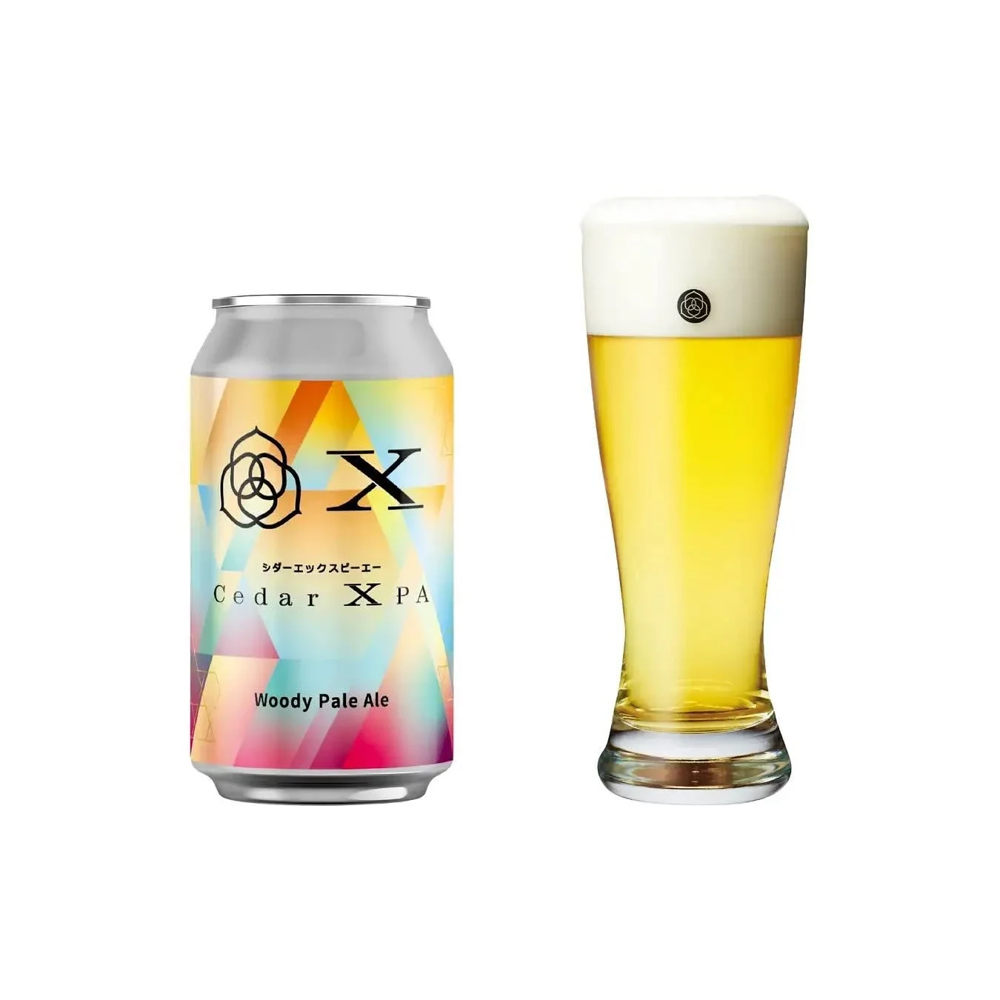

食・農 / 観光
Cedar X PA

東武鉄道スペーシア X × コエドブルワリーの「Cedar X PA」。企画とパッケージデザインを担当しています。
01 / 背景とテーマ
輪郭を与える
東武鉄道の特急スペーシア Xと、川越のコエドブルワリーによるコラボレーションビールです。日光杉並木街道の日光杉から着想し、実際に日光杉を使っています。出発点にあったのは、旅のあいだに飲むビールをつくる、という前提でした。車窓に流れる景色と、缶をあけたときの香りがつながること。それがこの一本の役目です。
02 / SCHEMAの担当範囲
全体を整える
SCHEMAは企画とパッケージデザインを担当。英国の伝統的なペールエールをベースにしたWoody Pale Ale（ABV 4.5%）という中身に対して、「木の香り」を絵で説明するのではなく、缶の佇まいそのもので伝えることを狙いました。東武ストア全59店舗、東武百貨店池袋店、駅ナカショップACCESS、COEDO KIOSKと、旅の途中でふと目に入る棚に並ぶことを前提に組み立てています。
03 / 取り組みの視点
枠組みをひらく
土産物としてではなく、移動しているその時間を味わうための一本として設計しました。2025年9月発売。鉄道とビールという、これまで別々に語られてきたふたつを、一本の缶の上でつないだ取り組みです。